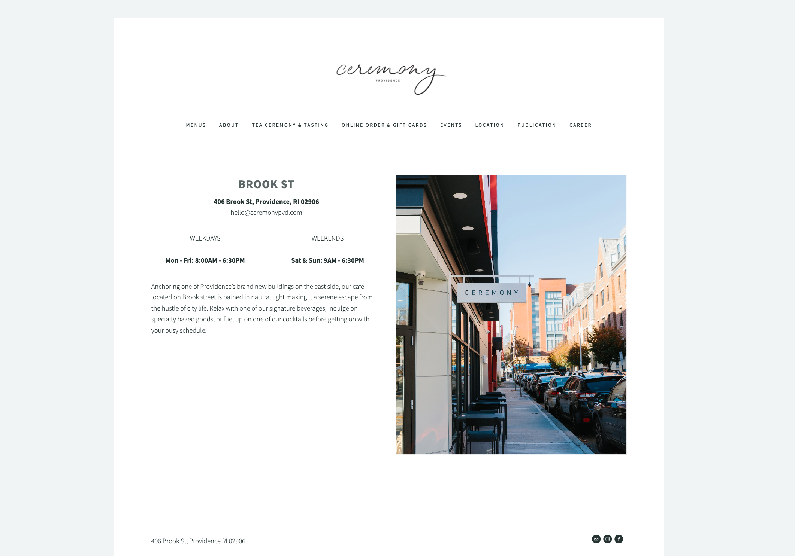
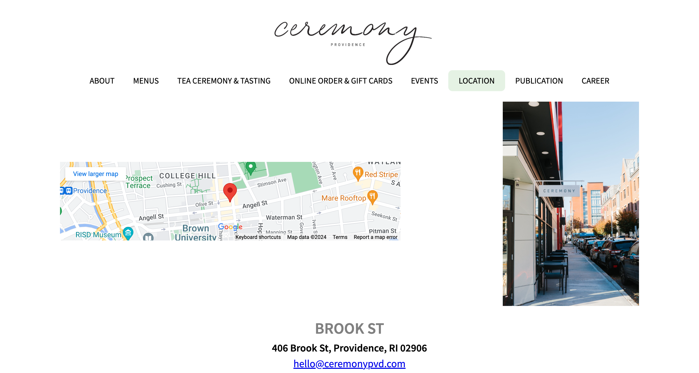

Redesign of Ceremony Providence Webpage
Individual Project
Project Overview
This project focused on redesigning the Ceremony Providence location page to ensure it is fully responsive and accessible, providing a seamless user experience across various devices.
Context & Purpose
The Ceremony Providence location page was chosen for redesign due to several usability and responsiveness issues. The original page lacked an interactive map, clear navigation cues, and a responsive design.
Original Website Screenshot
Research Insights
My research highlighted the following key areas that required improvement:
Mobile Responsiveness
“Navigating the page on my phone is cumbersome, and I can't easily find business hours.”

Clear Navigation
“The navigation bar is confusing, and I don't know which page I'm on.”
Accessibility
“Some buttons don't have clear labels, and it's hard to use with screen readers.”

Prominent Information
“The map and contact details are buried; they should be more visible and easy to find.”
Redesign Process
Visual Redesign
Sketches & Low-fidelity Wireframes
Initial sketches and low-fidelity wireframes were developed to rethink the layout, followed by high-fidelity mockups to refine the visual design. The redesign aimed to enhance mobile responsiveness, clarify navigation, and improve overall accessibility.

Speed Sketches

Final Sketch
Low-fidelity Wireframes

Desktop

Tablet

Mobile
Style Guide & Hi-Fidelity Mockups
A comprehensive style guide was created to ensure consistency across the design. Hi-fidelity mockups for mobile, tablet, and desktop views were developed to showcase the final design.
Style Guide

Desktop

Tablet

Mobile
Final Product
The redesigned Ceremony Providence location page now features improved responsiveness, clearer navigation, and enhanced accessibility:
Visit Redesigned Page Redesigned Page
Learnings
Redesigning the Ceremony Providence location page was an enlightening experience that taught me valuable lessons in web design and development.
Adopting a mobile-first approach emphasized the importance of creating adaptable designs that prioritize content and scale seamlessly across devices. Restructuring the page layout highlighted the power of visual hierarchy and intuitive navigation in enhancing usability.
Implementing accessibility best practices underscored the significance of creating inclusive websites that cater to all users. Testing the site with screen readers revealed opportunities to improve the user experience and ensure equal access to information.
Iterative design proved to be a crucial aspect of the process. Creating wireframes and mockups in cycles allowed for continuous refinement based on feedback and testing, ultimately leading to a balanced blend of aesthetics and functionality.
These learnings will shape my approach to future web design and development projects, serving as a reminder to prioritize responsiveness, accessibility, and user-centric design. The Ceremony Providence location page redesign may be complete, but the insights gained will continue to guide my growth as a designer and developer.